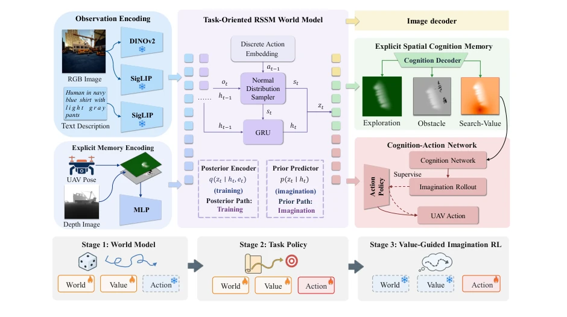
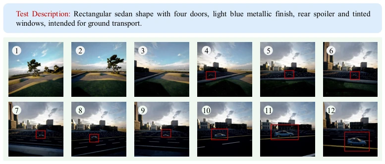
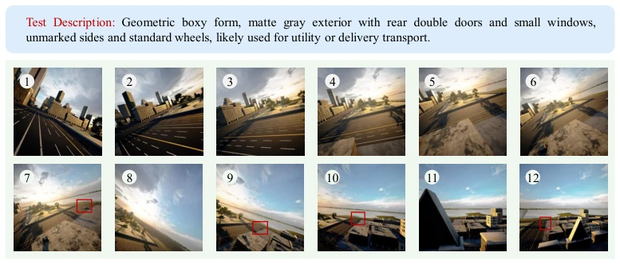

Urban UAV search is a typical "blind men touching an elephant" problem, with limited field of view and complex environment. Existing solutions either rely on explicit maps but lack foresight, degenerating into "reactive" machines; or use image generation for world models, with high inference latency and difficult spatial planning. SearchWorld attempts to anchor implicit imagination with explicit spatial memory, which is a very sound approach. It uses BEV grids to store exploration and obstacles, then decodes the value layer to guide decision-making, understanding "where it is worth going" better than simply learning a scalar Critic. However, simulation environments inevitably differ from real physics, and rely on precise depth perception; deploying on real machines still needs to pass the "domain adaptation" hurdle.
研究动机Motivation
自主无人机搜索面临部分可观测挑战，大区域窄视野导致覆盖难，密集几何限制运动安全。现有基于地图的智能体（Yamauchi, 1997; Chaplot et al., 2018）仅能基于过去观测反应，无法预测动作后果。世界模型虽能想象（Ha & Schmidhuber, 2018），但空间知识隐含在隐向量中，难以直接用于规划。UAV-ON 基准（Xiao et al., 2025）显示现有智能体成功率低，且缺乏对未探索区域的显式建模。因此，如何将显式空间认知与前瞻性推理结合，是提升搜索效率的关键。
Autonomous UAV search faces partial observability challenges; large areas with narrow fields of view lead to difficult coverage, and dense geometry limits motion safety. Existing map-based agents (Yamauchi, 1997; Chaplot et al., 2018) can only react based on past observations and cannot predict action consequences. Although world models can imagine (Ha & Schmidhuber, 2018), spatial knowledge is implicit in latent vectors and difficult to use directly for planning. The UAV-ON benchmark (Xiao et al., 2025) shows existing agents have low success rates and lack explicit modeling of unexplored areas. Therefore, how to combine explicit spatial cognition with forward-looking reasoning is key to improving search efficiency.
Overall adopts a three-stage curriculum learning. First, build explicit spatial cognitive memory, containing BEV grid exploration layer, obstacle layer, and task-aware value layer. The core is a task-oriented RSSM world model, encoding RGB, instructions, and memory, decoding observations, memory, and value layers. The Cognition-Action Network uses decoded spatial value to replace the scalar Critic, guiding actions through value pooling on imagined trajectories. Training is divided into three steps: 1. Random action pre-training for world model dynamics; 2. Expert behavior cloning to learn search and stop policies; 3. Freeze model, fine-tune action policy with value-guided imagined trajectories, updating only the action head.

Figure 1: SearchWorld overview with its three-stage curriculum. A task-oriented RSSM world model encodes the RGB view, the instruction, and the explicit spatial-cognition mem- ory, and decodes the observation, the spatial memory, the task-aware value layer, and the UAV action. The cognition–action network trains the action policy in Stage 2 and refines movement actions in Stage 3 by pooling the decoded value over imagined action footprints.
Tested on the UAV-ON benchmark, containing 14 Unreal Engine scenes and 11,000 tasks. Comparison baselines include CLIP-H, AOA, APEX, OctMem-Agent, and WMNav. Metrics are SR, OSR, SPL. SearchWorld's total SR reaches 23.8%, superior to the strongest agent OctMem-Agent's 19.5%. Unseen scene SR is 19.9%, with good robustness. Ablation studies show that removing explicit memory or training stages leads to significant performance degradation. In terms of inference efficiency, no VLM call is needed per step, single step time is only 0.31 seconds, one order of magnitude faster than the VLM baseline.

Figure 2: Case study of a successful search. The target is highlighted by the red box

Figure 3: A representative failure case. The instruction names the target instance (a gray utility box truck). The UAV explores its surroundings in the early panels but stays too far from the target to detect it, and the step budget is exhausted in the complex environment.